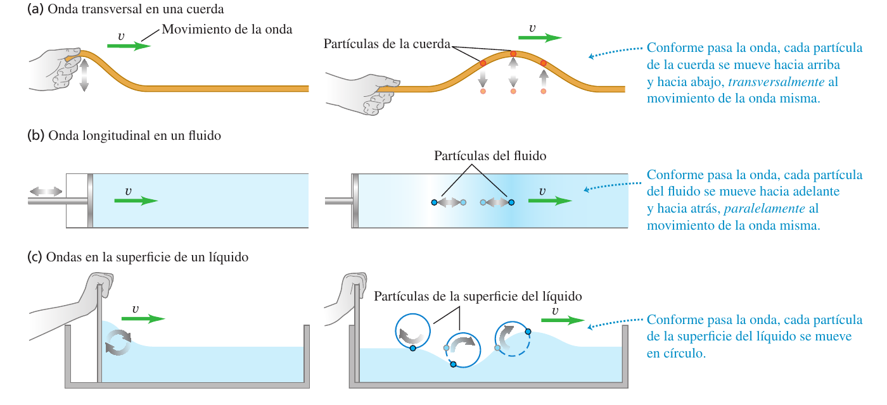
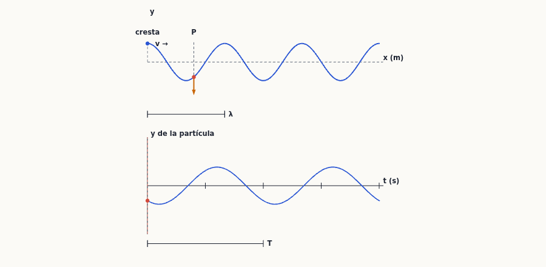
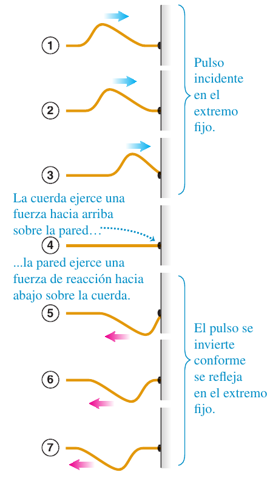
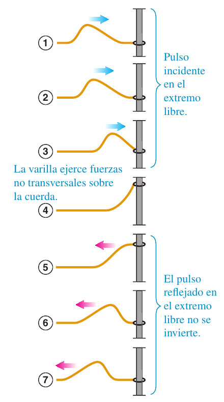
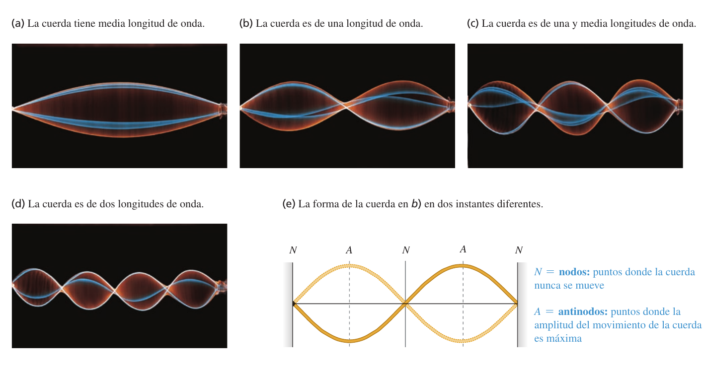
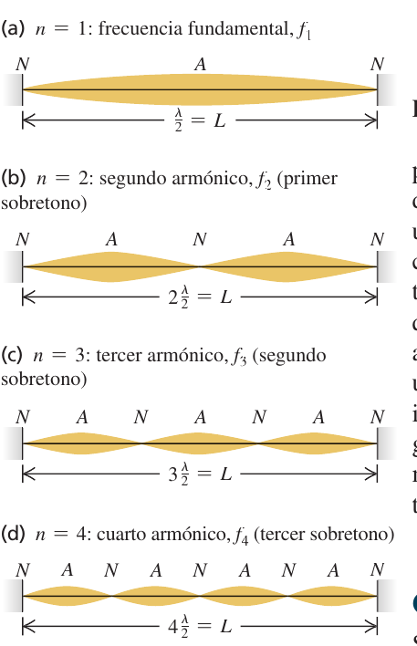
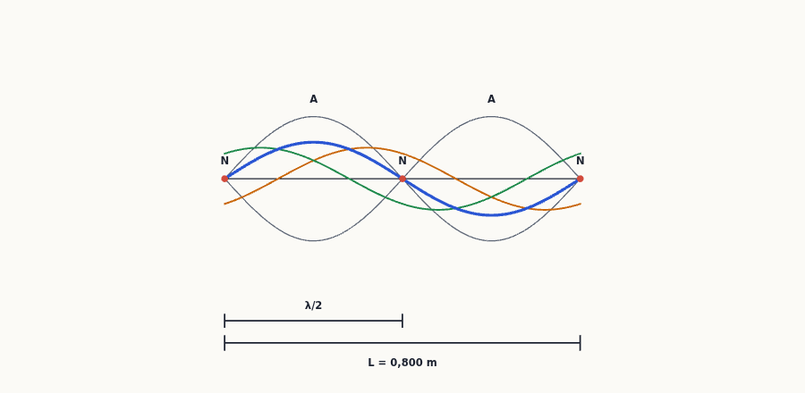

Ondas mecánicas
Una cuerda de guitarra, la «ola» de un estadio, el sonido que llega a tu oído, un terremoto: en todos ellos una perturbación viaja por un medio sin que el medio avance con ella. Este tema te enseña a describir una onda con tres números ($A$, $\lambda$, $f$), a escribir su función de onda $y(x,t)$, a calcular su rapidez y la potencia que transporta, y a entender por qué una cuerda sujeta por los dos extremos solo suena con ciertas frecuencias (las ondas estacionarias y los modos normales).
0Antes de empezar U p.469
Prerrequisitos: (1) el movimiento armónico simple (tema 14): cada partícula de una onda sinusoidal hace un MAS, así que $\omega=2\pi f$, $v_{máx}=\omega A$ y $a=-\omega^2y$ se usan constantemente; (2) la segunda ley de Newton y las tensiones en cuerdas (temas 4 y 5), para entender de dónde sale $v=\sqrt{F/\mu}$; (3) derivadas parciales sencillas: $\partial y/\partial t$ es la derivada respecto a $t$ con $x$ fijo, y $\partial y/\partial x$ al revés; (4) las identidades trigonométricas $\cos(a\pm b)=\cos a\cos b\mp\sin a\sin b$ (aparecen una vez, al deducir la onda estacionaria); (5) potencia $P=dW/dt$ (tema 6) y, para la ley del cuadrado inverso, el área de una esfera $4\pi r^2$.
Mapa del tema (sigue el orden de U): 15.1 qué es una onda mecánica (transversal, longitudinal); 15.2 ondas periódicas ($\lambda$, $T$, $f$, $v=\lambda f$); 15.3 la función de onda $y(x,t)=A\cos(kx-\omega t)$ y las velocidades de las partículas; 15.4 la rapidez de una onda en una cuerda, $v=\sqrt{F/\mu}$; 15.5 energía, potencia e intensidad; 15.6 reflexión en fronteras y superposición; 15.7 ondas estacionarias; 15.8 modos normales de una cuerda (armónicos y sobretonos).
En las convocatorias disponibles (2018-2025) no ha caído ningún problema numérico (P-1 / P-2) de ondas mecánicas. Lo único de este tema que aparece en un examen real es una pregunta de teoría (vale 4 puntos): «Ondas estacionarias en una cuerda», Examen Febrero 2019 (1ª semana) P-3 Teoría Opción 3.1 (el enunciado es solo el título). Está desarrollada en el apartado 9.1 como esquema de respuesta modelo, con dos cuestiones cortas propias (no son de examen) del estilo de las que acompañan a la teoría desde 2022.
| Convocatoria y pregunta | Tema a desarrollar | Dónde en este resumen |
|---|---|---|
| Feb 2019 (1ª semana) P-3 Teoría 3.1 | Ondas estacionarias en una cuerda | §7, §8 y apartado 9.1 |
Como no hay problemas de examen, los ejercicios numéricos de este tema son los del solucionario (E), traducidos y ampliados, ordenados de menos a más; no se simula ningún enunciado de examen. Dado que la teoría de ondas estacionarias sí cae, estudia §6-§8 con especial cuidado.
P- Pasa todo a $A$, $\lambda$ (o $k$), $f$ (o $\omega$) y $v$. Una función de onda $y=A\cos(kx\mp\omega t)$ ya contiene $A$, $k$ y $\omega$; de ahí $v=\omega/k=\lambda f$ y el sentido (signo $-$: hacia $+x$; signo $+$: hacia $-x$). Si el enunciado trae $\pi[\ldots]$ o $2\pi[\ldots]$ dentro del coseno, multiplica antes de leer $k$ y $\omega$.
- Dos rapideces distintas, ¡no las mezcles! $v$ es la rapidez de la onda (la fija el medio: en una cuerda $v=\sqrt{F/\mu}$); $v_y=\partial y/\partial t$ es la rapidez de una partícula de la cuerda (oscila con MAS; máximo $\omega A$).
- Dinámica ↔ cinemática: en un problema de cuerda siempre se igualan dos expresiones de $v$: $v=\lambda f$ (cinemática) y $v=\sqrt{F/\mu}$ (dinámica). $\mu$ es masa por unidad de longitud: $\mu=m/L$.
- Potencia: $P_{med}=\tfrac12\sqrt{\mu F}\,\omega^2A^2$ (cuadrática en $A$ y en $\omega$); fuente puntual: $I=P/4\pi r^2$.
- Cuerda fija en los dos extremos: $L=n\lambda_n/2$, $f_n=n\,v/2L=nf_1$, $n=1,2,3,\dots$ Dibuja siempre los nodos (N) y antinodos (A): nodo–nodo $=\lambda/2$, nodo–antinodo $=\lambda/4$.
- Suma de ondas: $y=y_1+y_2$ punto a punto; extremo fijo invierte el pulso, extremo libre no.
1Tipos de ondas mecánicas U p.469-470
Una onda mecánica es una perturbación que viaja por un medio (una cuerda, el aire, el agua). Piensa en «la ola» de un estadio: la perturbación (levantarse y sentarse) recorre las gradas, pero ningún espectador se va a la otra punta del estadio; cada uno solo sube y baja en su sitio. Lo que viaja es la forma del movimiento, y con ella energía (y cantidad de movimiento), nunca materia.
Una onda mecánica necesita un medio con un estado de equilibrio y una fuerza restauradora que lo devuelve a él cuando se perturba (la tensión en una cuerda, la presión en un fluido). Se llama transversal si el desplazamiento de las partículas es perpendicular a la dirección en que viaja la onda (cuerda), y longitudinal si es paralelo (sonido en un tubo). Las ondas en la superficie del agua combinan ambos movimientos: las partículas describen círculos. La rapidez $v$ de la onda depende solo de las propiedades del medio; no de cómo se agita la fuente.
U p.469-470
Creer que la onda «arrastra» el medio. Una boya en el mar sube y baja con las olas, pero no se aleja de la costa por ellas. Lo que se propaga es la perturbación y su energía.
U p.470¿Qué tipo de onda es «la ola» del estadio? Transversal: la ola viaja horizontalmente de un espectador al siguiente, pero el desplazamiento de cada espectador es vertical, perpendicular a esa dirección.
U p.4702Ondas periódicas: $\lambda$, $T$, $f$ y $v=\lambda f$ U p.470-473
Sacude el extremo de una cuerda tensa de arriba abajo una vez y viaja un pulso. Sacúdelo de forma repetida y regular y viaja un tren de ondas periódico. Hay dos formas de «mirar» ese tren, y conviene no confundirlas:
• Una foto (congelas el tiempo): ves la cuerda como una sinusoide en el espacio; la distancia entre dos crestas es la longitud de onda $\lambda$.
• Una película de un solo punto (te quedas en un $x$): ves cómo sube y baja con MAS; el tiempo entre dos subidas iguales es el periodo $T$.
Y la conexión entre las dos miradas: en un periodo $T$ la cresta avanza justo una longitud de onda, luego $v=\lambda/T=\lambda f$.
Amplitud $A$: desplazamiento máximo de una partícula respecto al equilibrio. Periodo $T$ y frecuencia $f=1/T$ (en hertz): los de la oscilación de cada partícula (son los de la fuente). Longitud de onda $\lambda$: distancia entre puntos correspondientes de ciclos sucesivos. Rapidez de la onda: $$v=\lambda f\qquad(15.1)$$ (una onda periódica avanza $\lambda$ cada $T$). Con la frecuencia angular $\omega=2\pi f$.
U p.470-472La rapidez del sonido en el aire a 20 °C es 344 m/s. Calcula la longitud de onda de una nota de $f=262$ Hz (do central de un piano) y la de la nota una octava más alta ($f$ doble).
- La rapidez la fija el aire; la frecuencia, la fuente. Con $v=\lambda f$: $\lambda=v/f=\dfrac{344\ \text{m/s}}{262\ \text{Hz}}=\mathbf{1{,}31\ m}$.
- Una octava más alta es el doble de frecuencia, $f'=524$ Hz, con la misma $v$: $\lambda'=344/524=0{,}656$ m $=\lambda/2$. (El ejemplo de U compara con el do alto, de frecuencia $4f=1048$ Hz, cuya longitud de onda es $0{,}328$ m.)
Moraleja: a mayor frecuencia, menor longitud de onda; $v$ no cambia.
U p.472Pensar que al doblar la frecuencia se dobla la rapidez. En un medio dado $v$ es constante: si $f$ sube, $\lambda$ baja en la misma proporción. (Evalúe 15.2 de U: al duplicar $\lambda$ en una cuerda, $v$ no cambia y $f$ se reduce a la mitad.)
U p.4733Descripción matemática de una onda: la función de onda U p.473-478
Para describir toda la cuerda en todos los instantes necesitamos una función de dos variables, $y(x,t)$: el desplazamiento transversal del punto de posición $x$ en el instante $t$. Si una onda sinusoidal viaja hacia $+x$, el punto $x$ repite lo que hacía el extremo (donde $x=0$) pero con retraso $x/v$: tarda $x/v$ en llegarle la onda. Por eso la función de onda es la de un MAS con $t$ sustituido por $t-x/v$.
Si el extremo $x=0$ oscila con $y(0,t)=A\cos\omega t$ y la onda viaja hacia $+x$ con rapidez $v$: $$y(x,t)=A\cos\left[\omega\left(\frac xv-t\right)\right]=A\cos 2\pi\left(\frac x\lambda-\frac tT\right)\qquad(15.3),(15.4)$$ Con el número de onda $k=2\pi/\lambda$ (rad/m) y $\omega=vk$ (15.5, 15.6): $$\boxed{y(x,t)=A\cos(kx-\omega t)}\ \text{(hacia }+x\text{)}\ (15.7)\qquad\boxed{y(x,t)=A\cos(kx+\omega t)}\ \text{(hacia }-x\text{)}\ (15.8)$$ Fase constante ⇒ $kx\mp\omega t=$ cte ⇒ $dx/dt=\pm\omega/k=\pm v$: por eso se ve que el signo del término $\omega t$ marca el sentido (con $-$ la cresta se mueve hacia $+x$). La cantidad $kx-\omega t$ es la fase.
U p.473-475Fijando $x$ y derivando respecto a $t$ (derivadas parciales) se obtiene el movimiento de una partícula de la cuerda: $$v_y(x,t)=\frac{\partial y}{\partial t}=\omega A\sin(kx-\omega t)\ (15.9)\qquad a_y(x,t)=\frac{\partial^2y}{\partial t^2}=-\omega^2A\cos(kx-\omega t)=-\omega^2y\ (15.10)$$ Cada partícula hace un MAS ($a_y=-\omega^2y$) de amplitud $A$: $v_{y,máx}=\omega A$. Derivando respecto a $x$ (la pendiente de la cuerda) se llega a la ecuación de onda, que cumple cualquier onda que viaja con rapidez $v$ sin deformarse: $$\frac{\partial^2y}{\partial x^2}=\frac1{v^2}\frac{\partial^2y}{\partial t^2}\qquad(15.12)$$
U p.476-477Confundir $v$ (rapidez de la onda, constante, $v=\omega/k$) con $v_y$ (rapidez transversal de una partícula, varía con $x$ y $t$, máximo $\omega A$). Una onda lenta de gran amplitud y frecuencia alta puede hacer que las partículas vayan mucho más rápido que la onda. Y no confundas la $\omega$ de la onda con la velocidad angular de un cuerpo que gira (ocurre en el problema práctico del final).
U p.476- Identificar: ¿es cinemática (solo $v,\lambda,f,A$, posiciones y velocidades de partículas) o también dinámica (aparecen $F,\mu$, leyes de Newton)?
- Plantear: lista de datos; dibuja $y$ contra $x$ (foto) y $y$ contra $t$ (película) con los valores conocidos. Elige entre (15.1), (15.6) y las formas (15.3), (15.4), (15.7) de la función de onda; si falta $v$ y no hay $\lambda$ ni $f$, usa la relación dinámica.
- Ejecutar: para escribir $y(x,t)$ hay que conocer $A$ y dos cualesquiera de $v,\lambda,f$ (o $v,k,\omega$).
- Evaluar: comprueba que $v,f,\lambda$ cumplen $v=\lambda f$ y la función en uno o más casos especiales ($x=0$, $t=0$).
El extremo de una cuerda de tendedero se mueve sinusoidalmente con $f=2{,}00$ Hz y $A=0{,}075$ m; la rapidez de onda es $v=12{,}0$ m/s. En $t=0$ el extremo tiene desplazamiento positivo máximo y está un instante en reposo. Calcula $\omega$, $T$, $\lambda$, $k$; escribe la función de onda y el desplazamiento del extremo y de un punto a $3{,}00$ m.
- a) $A=0{,}075$ m y $f=2{,}00$ Hz son los del extremo. $\omega=2\pi f=4{,}00\pi=12{,}6$ rad/s; $T=1/f=0{,}500$ s; $\lambda=v/f=12{,}0/2{,}00=6{,}00$ m; $k=2\pi/\lambda=\omega/v=1{,}05$ rad/m.
- b) Hacia $+x$ y con máximo en $x=0,t=0$ ⇒ coseno sin fase inicial: $y(x,t)=(0{,}075\ \text{m})\cos\left[2\pi\left(\dfrac{x}{6{,}00\ \text{m}}-\dfrac{t}{0{,}500\ \text{s}}\right)\right]=(0{,}075\ \text{m})\cos[(1{,}05\ \text{rad/m})x-(12{,}6\ \text{rad/s})t]$.
- c) En $x=0$: $y=(0{,}075\ \text{m})\cos(12{,}6\,t)$. En $x=3{,}00$ m: la fase se retrasa $kx=\pi$ ⇒ $y=(0{,}075\ \text{m})\cos(\pi-12{,}6\,t)=-(0{,}075\ \text{m})\cos(12{,}6\,t)$: oscila con el mismo MAS pero en oposición de fase (la mitad de $\lambda$ está a $3{,}00$ m).

4Rapidez de una onda transversal en una cuerda U p.478-482
¿De qué depende la rapidez de una onda en una cuerda? Dos efectos que compiten:
• La tensión $F$ es la fuerza restauradora: cuanto más tensa, con más fuerza «tira» cada trozo del siguiente y más deprisa se propaga la perturbación (una cuerda de guitarra más tensa suena más aguda).
• La densidad lineal $\mu$ (masa por metro) es la inercia: cuanto más pesada, más cuesta ponerla en movimiento y más lenta es la onda (las cuerdas graves son más gruesas).
En general, $v=\sqrt{\text{fuerza restauradora}/\text{inercia}}$, la misma estructura que $\omega=\sqrt{k/m}$ en el MAS.
$$v=\sqrt{\frac F\mu}\qquad(15.14)$$ con $F$ la tensión y $\mu=m/L$ la masa por unidad de longitud. Deducción (idea): en un trozo de longitud $\Delta x$ las componentes verticales de la tensión no se cancelan si la cuerda está curvada: la fuerza neta es $F\,\dfrac{\partial^2y}{\partial x^2}\Delta x$. La segunda ley de Newton, con masa $\mu\Delta x$, da $F\dfrac{\partial^2y}{\partial x^2}=\mu\dfrac{\partial^2y}{\partial t^2}$, que es la ecuación de onda (15.12) con $v^2=F/\mu$. La rapidez depende solo del medio ($F$ y $\mu$), no de $A$, $\lambda$ ni $f$ (hipótesis: $A\ll\lambda$, cuerda sin rigidez).
U p.478-480Una cuerda de $2{,}00$ kg cuelga de un soporte en el borde de un tiro vertical de $80{,}0$ m; en el extremo inferior lleva una caja de $20{,}0$ kg. a) Rapidez de una onda transversal. b) Si un punto de la cuerda hace MAS con $f=2{,}00$ Hz, ¿cuántas longitudes de onda caben en la cuerda?
- Se desprecia la masa de la cuerda frente a la caja, de modo que la tensión es el peso de la caja: $F=(20{,}0)(9{,}80)=196$ N.
- $\mu=m/L=2{,}00/80{,}0=0{,}0250$ kg/m. a) $v=\sqrt{F/\mu}=\sqrt{196/0{,}0250}=\mathbf{88{,}5\ m/s}$.
- b) $\lambda=v/f=88{,}5/2{,}00=44{,}3$ m ⇒ $80{,}0/44{,}3=\mathbf{1{,}81}$ longitudes de onda.
Las seis cuerdas de una guitarra tienen la misma longitud y tensión muy similar, pero distinto grosor. ¿En cuál viajan las ondas más deprisa? En la más delgada (menor $\mu$ ⇒ mayor $v=\sqrt{F/\mu}$).
U p.4825Energía del movimiento ondulatorio U p.482-485
Quien sacude el extremo de la cuerda hace trabajo sobre ella: cada trozo tira del siguiente con la tensión mientras este se mueve, y así la energía pasa de trozo en trozo a lo largo de la cuerda. La rapidez con que viaja esa energía es la potencia de la onda. Como las partículas hacen un MAS, la energía crece con el cuadrado de la amplitud ($E\propto A^2$, como en el tema 14) y con el cuadrado de la frecuencia (agitar más deprisa cuesta más).
La potencia instantánea en un punto es $P(x,t)=-F\,\dfrac{\partial y}{\partial x}\dfrac{\partial y}{\partial t}$, que para $y=A\cos(kx-\omega t)$ queda $$P(x,t)=\sqrt{\mu F}\,\omega^2A^2\sin^2(kx-\omega t)\qquad(15.23)$$ Es siempre positiva (la energía solo avanza). Sus valores máximo y medio ($\langle\sin^2\rangle=\tfrac12$) son $$P_{máx}=\sqrt{\mu F}\,\omega^2A^2\ (15.24)\qquad\boxed{P_{med}=\tfrac12\sqrt{\mu F}\,\omega^2A^2}\ (15.25)$$ Duplicar la amplitud o la frecuencia cuadruplica la potencia; duplicar la tensión la multiplica por $\sqrt2$.
U p.482-483La intensidad $I$ es la potencia media por unidad de área perpendicular a la propagación (W/m²). Una fuente puntual que radia uniformemente en el espacio reparte su potencia $P$ sobre esferas de área $4\pi r^2$: $I=P/4\pi r^2$, luego $$\frac{I_1}{I_2}=\frac{r_2^2}{r_1^2}\qquad(15.26)$$ Si $r$ se duplica, $I$ cae a $I/4$. (Supone que no hay absorción ni reflexión.)
U p.484En el ejemplo 15.2 (cuerda de $\mu=0{,}250$ kg/m, tensión $F=36{,}0$ N, $A=0{,}075$ m, $\omega=4{,}00\pi$ rad/s) calcula la potencia máxima, la media y la media cuando la amplitud baja a $7{,}50$ mm.
- $\sqrt{\mu F}=\sqrt{(0{,}250)(36{,}0)}=3{,}00$ kg/s. a) $P_{máx}=\sqrt{\mu F}\,\omega^2A^2=(3{,}00)(4{,}00\pi)^2(0{,}075)^2=\mathbf{2{,}66\ W}$.
- b) $P_{med}=\tfrac12P_{máx}=\mathbf{1{,}33\ W}$.
- c) $A$ pasa a ser $1/10$ ⇒ $P_{med}$ pasa a ser $1/100$: $\mathbf{13{,}3\ mW}$.
Una sirena radia uniformemente en todas direcciones. A $15{,}0$ m la intensidad es $0{,}250$ W/m². ¿A qué distancia es $0{,}010$ W/m²?
- $r_2=r_1\sqrt{I_1/I_2}=(15{,}0)\sqrt{0{,}250/0{,}010}=(15{,}0)(5)=\mathbf{75{,}0\ m}$.
- Comprobación: $r$ se hace 5 veces mayor ⇒ $I$ cae $5^2=25$ veces ($0{,}250/25=0{,}010$) ✓.
Olvidar el $\tfrac12$ (eso es $P_{máx}$), usar $f$ en lugar de $\omega=2\pi f$, o escribir $I\propto1/r$ (es $1/r^2$) o $r_2/r_1=I_1/I_2$ sin la raíz.
PCuatro cuerdas idénticas llevan ondas de 10 Hz: i) $F=10$ N, $A=1{,}0$ mm; ii) $F=40$ N, $A=1{,}0$ mm; iii) $F=10$ N, $A=4{,}0$ mm; iv) $F=20$ N, $A=2{,}0$ mm. Como $P_{med}\propto\sqrt F\,A^2$ y $\omega$ y $\mu$ son iguales: respecto a i), ii) es $\sqrt4=2$ veces mayor; iii) $4^2=16$; iv) $\sqrt2\cdot2^2\approx5{,}7$. Orden de mayor a menor: iii, iv, ii, i.
U p.4856Interferencia, condiciones de frontera y superposición U p.485-487
Grita frente a una pared lejana y oirás el eco: la onda sonora ha rebotado. Una onda que llega al borde de su medio se refleja (total o parcialmente) y vuelve; en la región donde la onda de ida y la de vuelta coinciden, ambas están a la vez en el mismo sitio. A eso se le llama interferencia. Dos cosas hay que saber: (1) qué le pasa al pulso al reflejarse y (2) cómo se combinan dos ondas que coinciden.
Extremo fijo (atado a un soporte rígido): la pared impide el desplazamiento del extremo; el pulso reflejado vuelve invertido (si llegó hacia arriba, vuelve hacia abajo). Razón: la cuerda tira de la pared hacia arriba y, por la 3.ª ley de Newton, la pared tira de la cuerda hacia abajo, lanzando un pulso hacia abajo.
Extremo libre (anillo sin rozamiento en una varilla, sin fuerza transversal): el pulso vuelve sin invertirse; el extremo sube hasta el máximo y lanza de vuelta un pulso del mismo signo.
Por qué: si dos pulsos iguales pero invertidos llegan desde lados opuestos a un punto O, en O se anulan siempre ($y=0$), exactamente lo que impone un extremo fijo: la parte «imagen» invertida es el pulso reflejado. Si los dos pulsos tienen el mismo signo, en O la pendiente es cero (no hay fuerza transversal), lo que corresponde a un extremo libre: el reflejado no se invierte.
U p.485-486

Cuando dos ondas coinciden en una región, el desplazamiento real de cada punto es la suma algebraica de los desplazamientos que cada onda produciría por sí sola: $$y(x,t)=y_1(x,t)+y_2(x,t)\qquad(15.27)$$ Es válido para ondas mecánicas siempre que la fuerza restauradora sea proporcional al desplazamiento (ecuación de onda lineal). Dos pulsos que se cruzan siguen su camino sin alterarse: durante el cruce se suman y después reaparecen idénticos. Si coinciden con el mismo signo, interferencia constructiva (suma más grande); con signos opuestos, destructiva (se compensan, incluso se anulan en todos los puntos).
U p.486Pensar que al cruzarse dos pulsos «rebotan» o se destruyen. Se suman mientras coinciden y después cada uno continúa con su forma original (ejercicio 15.32, más abajo). Tampoco desaparece la energía en la interferencia destructiva: sigue en la cuerda (como energía cinética de las partes que justo en ese instante se mueven).
PCon dos pulsos de forma distinta que viajan en sentidos opuestos, dibuja la cuerda cuando se acercan, se superponen y se cruzan. Recetario: desplaza cada pulso $v\,t$ en su sentido sin deformarlo y suma punto a punto; al final cada pulso conserva su forma original.
U p.4877Ondas estacionarias en una cuerda U p.487-491
Ata una cuerda a la pared y sacúdela por el otro extremo con ritmo regular. La onda que sale se refleja en la pared (invertida) y vuelve; ida y vuelta se superponen. A ciertas frecuencias la cuerda deja de parecer una onda que viaja y se ve como una forma fija que «respira»: hay puntos que nunca se mueven (nodos) y, entre ellos, puntos que oscilan con la máxima amplitud (antinodos). Es la imagen de una cuerda de guitarra o de comba. Una onda viajera transporta una forma que avanza; una onda estacionaria es una forma que se queda quieta y solo cambia de altura.

La onda incidente viaja hacia $-x$ y la reflejada hacia $+x$, con la misma $A$, $k$ y $\omega$; la reflexión en el extremo fijo invierte el signo: $$y_1=-A\cos(kx+\omega t),\qquad y_2=A\cos(kx-\omega t).$$ Con $\cos(a\pm b)=\cos a\cos b\mp\sin a\sin b$, el término $\cos kx\cos\omega t$ se cancela y quedan los dos términos con senos: $$y=y_1+y_2=\boxed{(A_{OE}\sin kx)\sin\omega t},\qquad A_{OE}=2A\qquad(15.28)$$ Comprobación: en $x=0$ vale $y=0$ para todo $t$ ✓ (extremo fijo). La función es el producto de un factor de posición ($A_{OE}\sin kx$) por uno de tiempo ($\sin\omega t$): la forma no se desplaza, y cada punto hace un MAS de frecuencia $\omega$ y amplitud $|A_{OE}\sin kx|$ que depende de dónde esté. Todos los puntos entre dos nodos consecutivos suben y bajan a la vez; a un lado y otro de un nodo, en oposición.
U p.489Nodos (amplitud cero): $\sin kx=0\Rightarrow kx=0,\pi,2\pi,\dots$, es decir $$x=0,\ \frac\lambda2,\ \lambda,\ \frac{3\lambda}2,\ \dots\qquad(15.29)$$ separados $\lambda/2$. Antinodos (amplitud máxima $A_{OE}=2A$): $\sin kx=\pm1\Rightarrow x=\lambda/4,\,3\lambda/4,\dots$: también separados $\lambda/2$ y a $\lambda/4$ de cada nodo. La onda estacionaria no transporta energía a lo largo de la cuerda: las dos ondas llevan la misma potencia en sentidos opuestos y la potencia neta es nula.
U p.489-490- Dibuja la forma en un instante con nodos (N) y antinodos (A): nodo–nodo (o antinodo–antinodo) $=\lambda/2$; nodo–antinodo $=\lambda/4$.
- Ecuaciones: casi siempre la función (15.28). La rapidez de onda sale de $\lambda$ y $f$ ($v=\lambda f$) o de las propiedades del medio ($F$, $\mu$).
- Velocidad y aceleración de un punto: primera y segunda derivada parcial respecto a $t$ de $y(x,t)$.
- Evalúa: compara con el dibujo y comprueba las condiciones de frontera (desplazamiento nulo en un extremo fijo).
Una cuerda de guitarra está en el eje $x$, fija en $x=0$ (el puente). Una onda sinusoidal de amplitud $A=0{,}750$ mm y $f=440$ Hz viaja hacia $-x$ a $v=143{,}0$ m/s y se refleja en el extremo fijo. Halla: a) $y(x,t)$ de la onda estacionaria; b) los nodos; c) la amplitud de la onda estacionaria y las magnitudes máximas de $v_y$ y $a_y$.
- a) $\omega=2\pi f=2{,}76\times10^3$ rad/s; $k=\omega/v=19{,}3$ rad/m. Con (15.28): $A_{OE}=2A=1{,}50$ mm ⇒ $y(x,t)=(1{,}50\ \text{mm})\sin[(19{,}3\ \text{rad/m})x]\sin[(2{,}76\times10^3\ \text{rad/s})t]$.
- b) Los nodos están en $x=n\lambda/2$ con $\lambda=v/f=0{,}325$ m ⇒ $x=0;\ 0{,}163;\ 0{,}325;\ 0{,}488$ m, …
- c) $A_{OE}=1{,}50$ mm (en los antinodos, $x=0{,}081;\ 0{,}244;\ 0{,}406$ m, …). Para un punto, $v_y=\partial y/\partial t=A_{OE}\omega\sin kx\cos\omega t$ ⇒ $v_{y,máx}=\omega A_{OE}=(2764{,}6)(1{,}50\times10^{-3})=\mathbf{4{,}15\ m/s}$ y $a_{y,máx}=\omega^2A_{OE}=\mathbf{1{,}15\times10^4\ m/s^2}$ (¡unas 1170 veces $g$!), ambas en un antinodo.
(1) Decir que los nodos están separados $\lambda$ (son $\lambda/2$). (2) Tomar como amplitud de cada onda viajera la de la estacionaria ($A=A_{OE}/2$). (3) Decir que la onda estacionaria transporta energía. (4) Confundir la rapidez de la onda ($v=\lambda f$, constante) con la rapidez transversal de un punto (máxima $\omega A_{OE}$ en un antinodo).
PSi se duplica la frecuencia del ejemplo anterior (de 440 a 880 Hz), ¿siguen siendo nodos los de antes? Sí: $\lambda$ se reduce a la mitad y el espaciado entre nodos ($\lambda/2$) también, luego aparecen todos los nodos anteriores más uno nuevo entre cada par.
U p.4918Modos normales de una cuerda U p.491-494
En §7 la cuerda era «larga» y cualquier frecuencia servía. Pero una cuerda de guitarra está fija por los dos extremos: debe haber nodo en $x=0$ y en $x=L$. Entonces no vale cualquier $\lambda$: en la longitud $L$ tiene que caber un número entero de medias longitudes de onda. Es como el columpio: solo empuja bien con el ritmo adecuado. Cada patrón permitido es un modo normal, con su propia frecuencia; los demás ritmos no producen un patrón estacionario.
La condición $\sin kL=0$ (nodo en $x=L$) da $kL=n\pi$: $$L=n\frac{\lambda_n}2\ (15.30)\qquad\lambda_n=\frac{2L}n\ (15.31)\qquad f_n=\frac{v}{\lambda_n}=n\frac{v}{2L}=nf_1\ \ (15.32\text{-}15.33)\qquad n=1,2,3,\dots$$ y, con $v=\sqrt{F/\mu}$, $$\boxed{f_1=\frac1{2L}\sqrt{\frac F\mu}}\qquad(15.35)\qquad y_n(x,t)=A_{OE}\sin k_nx\,\sin\omega_nt\ \ (15.34)$$ Nomenclatura: $f_1$ es la frecuencia fundamental (primer armónico); $f_n$ es el $n$-ésimo armónico, que es también el $(n-1)$-ésimo sobretono (el segundo armónico es el primer sobretono; el tercer armónico, el segundo sobretono). El modo $n$ tiene $n$ antinodos y $n+1$ nodos (contando los extremos). La frecuencia fundamental sube con la tensión y baja con la longitud y con la densidad lineal.
U p.491-493
| $n$ | nombre | $\lambda_n$ | $f_n$ | nodos (con extremos) | antinodos |
|---|---|---|---|---|---|
| 1 | fundamental = 1.er armónico | $2L$ | $f_1$ | 2 | 1 |
| 2 | 2.º armónico = 1.er sobretono | $L$ | $2f_1$ | 3 | 2 |
| 3 | 3.er armónico = 2.º sobretono | $2L/3$ | $3f_1$ | 4 | 3 |
| 4 | 4.º armónico = 3.er sobretono | $L/2$ | $4f_1$ | 5 | 4 |
Un oscilador armónico simple tiene una sola frecuencia; una cuerda (muchas partículas) tiene un número infinito de modos. Si la cuerda se pulsa o golpea (guitarra, piano), su movimiento es una superposición de varios modos normales a la vez, con distinta amplitud cada uno. La cuerda hace vibrar el aire con la misma frecuencia (no la misma longitud de onda) que ella: el sonido es una mezcla de la fundamental y sus armónicos, y de esa mezcla (contenido armónico) depende el timbre.
U p.492-493Una cuerda de $L=5{,}00$ m con $\mu=40{,}0$ g/m tiene fundamental $f_1=20{,}0$ Hz. Calcula a) la tensión, b) frecuencia y $\lambda$ del segundo armónico, c) frecuencia y $\lambda$ del segundo sobretono.
- a) De (15.35), $F=4\mu L^2f_1^2=4(40{,}0\times10^{-3})(5{,}00)^2(20{,}0)^2=\mathbf{1600\ N}$.
- b) Segundo armónico ($n=2$): $f_2=2f_1=\mathbf{40{,}0\ Hz}$, $\lambda_2=2L/2=\mathbf{5{,}00\ m}$.
- c) Segundo sobretono = tercer armónico ($n=3$): $f_3=3f_1=\mathbf{60{,}0\ Hz}$, $\lambda_3=2L/3=\mathbf{3{,}33\ m}$.
¿Qué frecuencia y longitud de onda tiene el sonido que emite la cuerda anterior vibrando en su fundamental? ($v_{sonido}=344$ m/s.)
- La frecuencia del sonido es la de la cuerda: $f=f_1=20{,}0$ Hz.
- $\lambda_{sonido}=v_{sonido}/f=344/20{,}0=\mathbf{17{,}2\ m}$, muy distinta de $\lambda_1=2L=10{,}0$ m de la cuerda, porque las rapideces de onda son distintas.

(1) «Segundo sobretono» $\neq$ «segundo armónico» ($n=3$ frente a $n=2$). (2) Creer que la $\lambda$ del sonido en el aire es $2L/n$ (esa es la de la cuerda; en el aire $\lambda=v_{sonido}/f$). (3) Redondear hacia arriba al contar armónicos audibles ($n\le f_{lím}/f_1$, parte entera). (4) Poner $f_n\propto n^2$ o $f_1\propto F$ (es $\propto\sqrt F$).
PMientras vibra una cuerda de guitarra, se toca suavemente su punto medio para que no vibre ahí. ¿Qué modos no pueden estar presentes? Tocar el centro impone un nodo en $x=L/2$; solo valen los modos con nodo en $L/2$ (los $n$ pares). Quedan excluidos $\mathbf{n=1,3,5,\dots}$ (que tienen un antinodo en el centro).
U p.4949Ejercicios resueltos
En las convocatorias disponibles no hay ningún problema numérico de ondas mecánicas; sí una pregunta de teoría (ondas estacionarias en una cuerda). Por eso primero está esa pregunta, desarrollada como respuesta modelo (con dos cuestiones cortas propias), y después los problemas del libro (E), de los más sencillos a los más difíciles y agrupados por tema. Pulsa «Mostrar soluciones» arriba para abrirlos todos de una vez. Cada ejercicio termina con una receta reutilizable.
9.1 Ejercicio de examen real (X): teoría de ondas estacionarias
X1 — Teoría: «Ondas estacionarias en una cuerda» X U p.485-494
Pregunta de teoría (4 puntos), a elegir entre dos opciones. Opción 3.1: «Ondas estacionarias en una cuerda». (El enunciado del examen es solo el título; la otra opción era «Momento angular. Conservación».)
Esquema de respuesta modelo (aproximadamente una cara). Lo que no puede faltar está en negrita; las figuras son las de §7 y §8.
- Punto de partida: la onda viajera sinusoidal. Una perturbación se propaga por una cuerda tensa con rapidez $v=\sqrt{F/\mu}$ (15.14), que depende solo del medio. Si es sinusoidal: $y(x,t)=A\cos(kx-\omega t)$ hacia $+x$ y $A\cos(kx+\omega t)$ hacia $-x$, con $k=2\pi/\lambda$, $\omega=2\pi f$ y $v=\lambda f=\omega/k$ (15.1, 15.6).
- Superposición y reflexión. La ecuación de onda es lineal, así que el desplazamiento total es la suma $y=y_1+y_2$ (15.27). En un extremo fijo la onda se refleja invertida (desfase de $\pi$): la pared ejerce sobre la cuerda una fuerza que anula el desplazamiento allí. En un extremo libre se refleja sin invertirse.
- Deducción. Cuerda fija en $x=0$; la incidente va hacia $-x$ y la reflejada hacia $+x$, con la misma $A$, $k$, $\omega$: $y_1=-A\cos(kx+\omega t)$, $y_2=A\cos(kx-\omega t)$. Con $\cos(a\pm b)=\cos a\cos b\mp\sin a\sin b$: $$y=y_1+y_2=\boxed{(2A\sin kx)\sin\omega t}\ \Rightarrow\ y(x,t)=(A_{OE}\sin kx)\sin\omega t,\quad A_{OE}=2A\quad(15.28).$$ Comprobación: en $x=0$, $y=0$ para todo $t$ ✓.
- Interpretación. La función se separa en un factor de posición por uno de tiempo: la forma $A_{OE}\sin kx$ no se desplaza, solo «respira». Cada punto hace un MAS de frecuencia $\omega$ y amplitud $|A_{OE}\sin kx|$, que depende de $x$. Entre dos nodos consecutivos todos los puntos oscilan en fase; a un lado y otro de un nodo, en oposición. En contraste, en una onda viajera todos los puntos tienen la misma amplitud y la fase cambia de punto a punto.
- Nodos y antinodos. Nodos: $\sin kx=0\Rightarrow x=0,\ \lambda/2,\ \lambda,\ 3\lambda/2,\dots$ (15.29), separados $\lambda/2$. Antinodos (amplitud máxima $2A$): $x=\lambda/4,\ 3\lambda/4,\dots$, también separados $\lambda/2$ y a $\lambda/4$ de cada nodo.
- Energía. Las dos ondas llevan la misma potencia en sentidos opuestos ⇒ la potencia media transmitida es cero: la onda estacionaria no transporta energía a lo largo de la cuerda; en un nodo nunca pasa energía porque $v_y=0$ siempre.
- Modos normales (cuerda fija en los dos extremos). Ahora debe haber nodo también en $x=L$: $\sin kL=0\Rightarrow kL=n\pi\Rightarrow$ $L=n\lambda/2$ (15.30). Luego $$\lambda_n=\frac{2L}n,\qquad f_n=\frac v{\lambda_n}=n\frac{v}{2L}=nf_1\quad(n=1,2,3,\dots)\qquad(15.31\text{-}15.33)$$ y, con $v=\sqrt{F/\mu}$, $f_1=\dfrac1{2L}\sqrt{\dfrac F\mu}$ (15.35). Solo esas frecuencias producen onda estacionaria (cuantización por las condiciones de contorno).
- Nomenclatura. $f_1$: fundamental (primer armónico); $f_n$: $n$-ésimo armónico, que es el $(n-1)$-ésimo sobretono. El modo $n$ tiene $n+1$ nodos (contando los extremos) y $n$ antinodos; $y_n=A_{OE}\sin k_nx\sin\omega_nt$ (15.34). Una cuerda pulsada vibra con una superposición de modos normales.
- Consecuencias prácticas. $f_1$ crece con $F$ (afinar es tensar), disminuye con $L$ (trastes, el dedo) y con $\mu$ (cuerdas graves más gruesas). El sonido que emite en el aire tiene la misma frecuencia (no la misma $\lambda$).
- Para la cuartilla: las figuras (a) envolvente con nodos y antinodos y $\lambda/2$ entre nodos; (b) los cuatro primeros modos con $\lambda_n$ y $f_n$; y las fórmulas (15.14), (15.27), (15.28), (15.29), (15.30)-(15.33) y (15.35).
(1) Decir que los nodos están separados $\lambda$ (son $\lambda/2$). (2) Confundir «segundo sobretono» con «segundo armónico» ($n=3$ frente a $n=2$). (3) Tomar como amplitud de las viajeras la de la estacionaria ($A=A_{OE}/2$). (4) Decir que la onda estacionaria transporta energía.
Cuestión corta C1 (propia): cuadruplicar la tensión P
Una cuerda de guitarra fija en ambos extremos vibra en su modo fundamental. a) Si se cuadruplica la tensión, ¿qué les ocurre a la frecuencia fundamental y a la longitud de onda del modo fundamental? b) ¿Y a la longitud de onda del sonido que emite en el aire?
- a) $\lambda_1=2L$ depende solo de la geometría: no cambia. $v=\sqrt{F/\mu}$ se duplica ($\sqrt4=2$) ⇒ $f_1=v/2L$ se duplica (sube una octava) (15.35).
- b) El sonido tiene la frecuencia de la cuerda, que ahora es el doble; su rapidez en el aire (344 m/s) no cambia ⇒ $\lambda_{aire}=v_{aire}/f$ se reduce a la mitad.
Cuestión corta C2 (propia): un dedo en $L/3$ P
Si se toca ligeramente una cuerda tensa (fija en ambos extremos) en el punto $x=L/3$ mientras se la excita, ¿qué armónicos pueden sonar? ¿Cuál es la frecuencia más baja?
- El dedo impone un nodo en $x=L/3$. En el modo $n$ los nodos están en $x=mL/n$ ($m=0,1,\dots,n$), porque $L=n\lambda_n/2$ y los nodos distan $\lambda_n/2$ (15.29-15.30).
- Debe existir un $m$ con $m/n=1/3\Rightarrow n=3m$: solo pueden sonar $n=3,6,9,\dots$ La más baja es $f_3=3f_1$.
- Comprobación: cada tercio de la cuerda vibra como una cuerda fija de longitud $L/3$, cuya fundamental es $v/[2(L/3)]=3f_1$ ✓ (figura de §8).
9.2 Problemas del solucionario (E), agrupados por tema y de menos a más
Los enunciados son los de los ejercicios y problemas de fin de capítulo de U (pp. 496-503), traducidos; la solución, ampliada, sigue el solucionario (E). Usamos $g=9{,}80$ m/s² como en el libro.
Cinemática de ondas: $\lambda$, $f$, $v$ y la función de onda
Problema 15.1 — Longitud de onda y periodo de un sonido E 15-1 U p.497, 471
La rapidez del sonido en el aire a 20 °C es 344 m/s. a) Calcula la longitud de onda de una onda sonora de 784 Hz (nota sol de un piano) y cuántos milisegundos dura cada vibración. b) Calcula la longitud de onda de una onda sonora una octava más alta (frecuencia doble).
- Idea. En una onda periódica, en un periodo $T$ la cresta avanza exactamente una $\lambda$ ⇒ $v=\lambda/T=\lambda f$ (15.1). Conocidas $v$ y $f$ sale $\lambda$.
- a) $\lambda=\dfrac vf=\dfrac{344}{784}=\mathbf{0{,}439\ m}$. La duración de una vibración es el periodo: $T=1/f=1/784=1{,}28\times10^{-3}$ s $=\mathbf{1{,}28\ ms}$.
- b) La misma $v$ (la fija el medio, no la frecuencia), $f'=1568$ Hz ⇒ $\lambda'=344/1568=\mathbf{0{,}219\ m}=\lambda/2$.
Pensar que al doblar $f$ se dobla $v$.
Problema 15.7 — Función de onda hacia $-x$ y fase E 15-2 U p.497, 474-476
Ciertas ondas transversales en una cuerda tienen rapidez 8,00 m/s, amplitud 0,0700 m y longitud de onda 0,320 m. Viajan en la dirección $-x$ y en $t=0$ el extremo $x=0$ tiene su desplazamiento máximo hacia arriba. a) Calcula frecuencia, periodo y número de onda. b) Escribe una función de onda. c) Calcula el desplazamiento de la partícula en $x=0{,}360$ m en $t=0{,}150$ s. d) ¿Cuánto tiempo debe pasar después de $t=0{,}150$ s para que esa partícula vuelva a tener su desplazamiento máximo hacia arriba?
- a) $f=v/\lambda=8{,}00/0{,}320=\mathbf{25{,}0\ Hz}$ (15.1); $T=1/f=\mathbf{0{,}0400\ s}$; $k=2\pi/\lambda=\mathbf{19{,}6\ rad/m}$ (15.5); además $\omega=2\pi f=157$ rad/s.
- b) Elegir la forma. Hacia $-x$ ⇒ fase $kx+\omega t$ (15.8): para seguir una cresta (fase constante) al crecer $t$ debe disminuir $x$. En $x=0$: $y(0,t)=A\cos\omega t$, que en $t=0$ vale $+A$ ✓. Por tanto $$y(x,t)=(0{,}0700\ \text{m})\cos[(19{,}6\ \text{rad/m})x+(157\ \text{rad/s})t]=A\cos2\pi\left(\frac x{0{,}320\ \text{m}}+\frac t{0{,}0400\ \text{s}}\right).$$
- c) La forma con $\lambda$ y $T$ evita redondeos: fase $=2\pi(0{,}360/0{,}320+0{,}150/0{,}0400)=2\pi(1{,}125+3{,}75)=2\pi(4{,}875)$. Como el coseno tiene periodo $2\pi$ solo importa la parte fraccionaria: $\cos(2\pi\cdot0{,}875)=\cos315^\circ=0{,}707$ ⇒ $y=\mathbf{+0{,}0495\ m=4{,}95\ cm}$.
- d) ¿Sube o baja? $v_y=\partial y/\partial t=-A\omega\sin(\text{fase})=-(0{,}0700)(157)\sin315^\circ=+7{,}78$ m/s $>0$: está subiendo hacia el máximo.
- El máximo exige fase $=2\pi n$: $x/\lambda+t/T=n\Rightarrow t=T(n-1{,}125)$. Para $n=5$: $t=0{,}0400(3{,}875)=0{,}155$ s (el primero posterior a 0,150 s; $n=4$ da 0,115 s, anterior). $\Delta t=\mathbf{0{,}0050\ s=5{,}0\ ms}$.
- Comprobación. Le faltaba $1-0{,}875=0{,}125$ ciclo ⇒ $\Delta t=T/8=0{,}005$ s ✓ (está a $45^\circ$ del máximo, subiendo).
Usar $kx-\omega t$ para una onda hacia $-x$; o calcular la fase con $k$ y $\omega$ redondeados (el error se amplifica cuando la fase vale varios ciclos).
Problema 15.48 — Onda con $\pi$ factorizado: amplitud, $\lambda$, $v$, $F$ y potencia E 15-17 U p.500, 474-483
El desplazamiento transversal de una onda en una cuerda es $y(x,t)=(0{,}750\ \text{cm})\cos\pi[(0{,}400\ \text{cm}^{-1})x+(250\ \text{s}^{-1})t]$. a) Calcula amplitud, periodo, frecuencia, longitud de onda y rapidez de propagación. b) Dibuja la forma de la cuerda en $t=0$, $0{,}0005$ s y $0{,}0010$ s. c) ¿La onda viaja hacia $+x$ o $-x$? d) La masa por unidad de longitud es 0,0500 kg/m: calcula la tensión. e) Determina la potencia media.
- Meter el $\pi$ dentro: $k=0{,}400\pi$ rad/cm $=40{,}0\pi$ rad/m; $\omega=250\pi$ rad/s $=785$ rad/s.
- a) $A=\mathbf{0{,}750\ cm}$; $\lambda=2\pi/k=2/0{,}400=\mathbf{5{,}00\ cm}$; $f=\omega/2\pi=\mathbf{125\ Hz}$; $T=\mathbf{8{,}00\ ms}$; $v=\lambda f=\mathbf{6{,}25\ m/s}$.
- b) En $t=0$: $y=0{,}750\cos(0{,}400\pi x)$ (cm), con cresta en $x=0$ y en $5{,}00$ cm y valle en $2{,}50$ cm. Cada $0{,}0005$ s la forma se desplaza $v\Delta t=0{,}3125$ cm hacia $-x$ sin cambiar: las crestas pasan de $x=5$ cm a $4{,}69$ cm y a $4{,}38$ cm. Valores en $x=0$: $y=0{,}750;\ 0{,}693;\ 0{,}530$ cm.
- c) Fase $kx+\omega t$: para mantenerla constante, al crecer $t$ disminuye $x$ ⇒ hacia $-x$ (lo confirma b).
- d) $F=\mu v^2=(0{,}0500)(6{,}25)^2=\mathbf{1{,}95\ N}$.
- e) $P_{med}=\tfrac12\sqrt{\mu F}\,\omega^2A^2=\tfrac12\sqrt{(0{,}0500)(1{,}953)}\,(785{,}4)^2(7{,}50\times10^{-3})^2=\mathbf{5{,}42\ W}$.
Leer $k=0{,}400$ (olvidando el $\pi$) ⇒ $\lambda$ y $v$ falsas por un factor $\pi$.
Problema 15.28 — Todo a partir de $y(x,t)$: $A$, $f$, $\lambda$, $v$, sentido, $F$ y $P$ E 15-9 U p.499, 475-483
Un compañero te dice que la función de onda de una onda en una cuerda delgada es $y(x,t)=(2{,}30\ \text{mm})\cos[(6{,}98\ \text{rad/m})x+(742\ \text{rad/s})t]$. Mides que la cuerda tiene 1,35 m de longitud y 0,00338 kg de masa. Determina: a) amplitud, b) frecuencia, c) longitud de onda, d) rapidez de la onda, e) dirección en que viaja, f) tensión de la cuerda y g) potencia media transmitida.
- Comparando con $A\cos(kx+\omega t)$: a) $A=\mathbf{2{,}30\ mm}$; $k=6{,}98$ rad/m; $\omega=742$ rad/s.
- b) $f=\omega/2\pi=\mathbf{118\ Hz}$. c) $\lambda=2\pi/k=\mathbf{0{,}900\ m}$. d) $v=\omega/k=\mathbf{106\ m/s}$ (o $\lambda f$).
- e) Fase $kx+\omega t$ ⇒ viaja hacia $-x$ (15.8).
- f) $\mu=0{,}00338/1{,}35=2{,}50\times10^{-3}$ kg/m ⇒ $F=\mu v^2=(2{,}50\times10^{-3})(106{,}3)^2=\mathbf{28{,}3\ N}$.
- g) $P_{med}=\tfrac12\sqrt{\mu F}\,\omega^2A^2=\tfrac12\sqrt{(2{,}504\times10^{-3})(28{,}3)}\,(742)^2(2{,}30\times10^{-3})^2=\mathbf{0{,}388\ W}\approx0{,}39$ W.
Leer $f=742$ Hz (es $\omega$ en rad/s).
Rapidez de una onda en una cuerda: $v=\sqrt{F/\mu}$
Problema 15.16 — Tensión necesaria E 15-6 U p.498, 480
¿Con qué tensión debe estirarse una cuerda de 2,50 m de longitud y masa 0,120 kg para que ondas transversales de frecuencia 40,0 Hz tengan una longitud de onda de 0,750 m?
- $\mu=m/L=0{,}120/2{,}50=0{,}0480$ kg/m (masa por unidad de longitud, cuerda uniforme).
- $v=\lambda f=(0{,}750)(40{,}0)=30{,}0$ m/s (15.1).
- De $v=\sqrt{F/\mu}$ (15.14): $F=\mu v^2=(0{,}0480)(30{,}0)^2=\mathbf{43{,}2\ N}$.
Usar la masa total $m$ en lugar de $\mu$.
Problema 15.15 — Cuerda tensada por una masa colgante y un diapasón E 15-6 U p.498, 480
El extremo de una cuerda horizontal se conecta a la punta de un diapasón eléctrico que la hace vibrar transversalmente a 120 Hz. El otro extremo pasa por una polea y sostiene una masa de 1,50 kg. La masa por unidad de longitud de la cuerda es 0,0480 kg/m. a) ¿Qué rapidez tiene una onda transversal en la cuerda? b) ¿Cuál es su longitud de onda? c) ¿Cómo cambian a) y b) si la masa aumenta a 3,00 kg?
- Tensión. La masa cuelga en equilibrio ⇒ la cuerda tira de ella con $F=mg$ (1.ª ley; polea ideal, la tensión es la misma a ambos lados): $F=(1{,}50)(9{,}80)=14{,}7$ N.
- a) $v=\sqrt{F/\mu}=\sqrt{14{,}7/0{,}0480}=\mathbf{17{,}5\ m/s}$ (15.14).
- b) La frecuencia la impone el diapasón: $\lambda=v/f=17{,}5/120=\mathbf{0{,}146\ m}$.
- c) $F=29{,}4$ N (doble) ⇒ $v\propto\sqrt F$ se multiplica por $\sqrt2$: 24,7 m/s; $f$ sigue siendo 120 Hz ⇒ $\lambda$ también ×$\sqrt2$: 0,206 m.
Pensar que al doblar la masa se dobla $v$ (solo ×$\sqrt2$), o que cambia $f$.
Problema 15.18 — Leer una función de onda y obtener la tensión E 15-7 U p.498, 474-480
Una cuerda de 1,50 m que pesa 0,0125 N está atada al techo por su extremo superior; el inferior sostiene un peso $W$. Desprecia la variación de la tensión a lo largo de la cuerda debida a su propio peso. Al dar un leve pulso, las ondas que suben por ella obedecen $y(x,t)=(8{,}50\ \text{mm})\cos(172\ \text{rad/m}\ x-4830\ \text{rad/s}\ t)$. Supón que la tensión es constante e igual a $W$. a) ¿Cuánto tarda un pulso en recorrer toda la cuerda? b) ¿Cuál es el peso $W$? c) ¿Cuántas longitudes de onda hay en la cuerda en cualquier instante? d) ¿Cuál es la ecuación de las ondas que bajan por la cuerda?
- Lectura. Comparando con $A\cos(kx-\omega t)$ (15.7): $A=8{,}50$ mm, $k=172$ rad/m, $\omega=4830$ rad/s. Como la onda «sube» y es de la forma $kx-\omega t$ (hacia $+x$), el eje $x$ apunta hacia arriba.
- a) $v=\omega/k=4830/172=28{,}1$ m/s (15.6); $t=L/v=1{,}50/28{,}08=\mathbf{0{,}0534\ s=53{,}4\ ms}$.
- b) Masa de la cuerda $m=0{,}0125/9{,}80=1{,}28\times10^{-3}$ kg ⇒ $\mu=m/L=8{,}50\times10^{-4}$ kg/m. Con $F=W$ y $v=\sqrt{F/\mu}$: $W=\mu v^2=(8{,}50\times10^{-4})(28{,}08)^2=\mathbf{0{,}670\ N}$. (Comprobación de la hipótesis: $W=0{,}670$ N $\gg$ peso de la cuerda 0,0125 N, ≈2 %: despreciar el peso propio es razonable.)
- c) $\lambda=2\pi/k=0{,}0365$ m ⇒ $N=L/\lambda=1{,}50/0{,}0365=\mathbf{41{,}1}$ longitudes de onda.
- d) Misma $A$, $k$, $\omega$ (mismo medio y misma fuente), sentido $-x$ (hacia abajo) ⇒ $y=(8{,}50\ \text{mm})\cos(172x+4830t)$ (15.8).
Tomar $v=k/\omega$ o confundir $k$ con $\lambda$.
Problema 15.20 — Cuerda pesada: la tensión varía a lo largo de la cuerda E 15-7 U p.498, 480-482
Una cuerda pesada de 6,00 m de longitud pesa 29,4 N; uno de sus extremos está fijo al techo y cuelga verticalmente. Del extremo inferior se suspende una masa de 0,500 kg. Calcula la rapidez de las ondas transversales en la cuerda a) en la parte inferior, b) en la parte media y c) en la parte superior. d) ¿La tensión en la parte media es el promedio de las tensiones en las partes superior e inferior? ¿La rapidez de onda en la parte media es el promedio de las rapideces arriba y abajo? Explica.
- Idea clave. Ahora la cuerda es pesada: en cada punto la tensión sostiene la masa colgada más el trozo de cuerda que hay por debajo de ese punto (DCL del trozo inferior en equilibrio). La tensión aumenta hacia arriba ⇒ $v$ también.
- $\mu=\dfrac{29{,}4/9{,}80}{6{,}00}=\dfrac{3{,}00}{6{,}00}=0{,}500$ kg/m.
- a) Abajo: solo la masa: $F=(0{,}500)(9{,}80)=4{,}90$ N ⇒ $v=\sqrt{4{,}90/0{,}500}=\mathbf{3{,}13\ m/s}$.
- b) En medio: masa + media cuerda: $F=4{,}90+14{,}7=19{,}6$ N ⇒ $v=\sqrt{19{,}6/0{,}5}=\mathbf{6{,}26\ m/s}$.
- c) Arriba: masa + cuerda entera: $F=4{,}90+29{,}4=34{,}3$ N ⇒ $v=\mathbf{8{,}28\ m/s}$.
- d) $F$ crece linealmente con la longitud de cuerda que cuelga ⇒ en el centro $F=(4{,}90+34{,}3)/2=19{,}6$ N: sí es el promedio. Pero $v=\sqrt{F/\mu}$ no es lineal en $F$: $(3{,}13+8{,}28)/2=5{,}71$ m/s $\neq6{,}26$ m/s: no (la raíz es cóncava, el valor central supera al promedio).
Usar la misma tensión en toda la cuerda; o promediar raíces como si fueran lineales.
Energía y potencia: $P_{med}$ e intensidad
Problema 15.22 — Potencia media en una cuerda de piano E 15-8 U p.498, 482-483
La cuerda de un piano, de masa 3,00 g y longitud 80,0 cm, se estira con una tensión de 25,0 N. Una onda de frecuencia 120,0 Hz y amplitud 1,6 mm viaja por la cuerda. a) Calcula la potencia media que transporta. b) ¿Qué sucede con la potencia media si la amplitud se reduce a la mitad?
- Por qué hay potencia. Cada trozo de cuerda tira del siguiente (tensión) y este se mueve transversalmente ⇒ realiza trabajo sobre él: la energía avanza con la onda.
- $\mu=3{,}00\times10^{-3}/0{,}800=3{,}75\times10^{-3}$ kg/m; $\omega=2\pi(120{,}0)=754$ rad/s.
- a) (15.25): $P_{med}=\tfrac12\sqrt{\mu F}\,\omega^2A^2=\tfrac12\sqrt{(3{,}75\times10^{-3})(25{,}0)}\,(754)^2(1{,}6\times10^{-3})^2=\mathbf{0{,}22\ W}$ (0,223 W).
- b) $P_{med}\propto A^2$ ⇒ con $A/2$, $P_{med}/4=\mathbf{0{,}056\ W}$.
Olvidar el ½ (eso es $P_{máx}$, 15.24) o usar $f$ en lugar de $\omega$.
Problema 15.25 — Intensidad de un avión y ley del inverso del cuadrado E 15-9 U p.498, 484
Cuando despega un avión a reacción produce un sonido de intensidad 10,0 W/m² a 30,0 m de distancia. Prefieres el sonido tranquilo de una conversación normal, 1,0 μW/m². Supón que el avión se comporta como una fuente puntual. a) ¿Cuál es la distancia mínima a la pista a la que podrías vivir para conservar la paz? b) ¿Qué intensidad percibe un amigo que vive al doble de esa distancia? c) ¿Qué potencia sonora produce el avión al despegar?
- Idea. Una fuente puntual reparte su potencia $P$ uniformemente sobre esferas de área $4\pi r^2$; sin pérdidas, $P$ atraviesa todas las esferas ⇒ $I=P/4\pi r^2$ y $I_1r_1^2=I_2r_2^2$ (15.26).
- a) $r_2=r_1\sqrt{I_1/I_2}=30{,}0\sqrt{10{,}0/(1{,}0\times10^{-6})}=30{,}0\times3162=9{,}5\times10^4$ m ≈ 95 km.
- b) $r_3=2r_2$ ⇒ $I_3=I_2(r_2/r_3)^2=I_2/4=\mathbf{0{,}25\ \mu W/m^2}$.
- c) $P=4\pi r_1^2I_1=4\pi(30{,}0)^2(10{,}0)=\mathbf{1{,}1\times10^5\ W}$.
- Comentario. 95 km es enorme porque la intensidad cae solo como $1/r^2$; en la realidad la absorción del aire y los obstáculos la reducen mucho antes.
Hacer $I\propto1/r$, o tomar $r_2/r_1=I_1/I_2$ sin la raíz.
Superposición de pulsos
Problema 15.32 — Dos pulsos triangulares que se cruzan E 15-10 U p.499, 485-486
Dos pulsos triangulares idénticos viajan uno hacia el otro por una cuerda estirada, como en la figura E15.32 (cada uno: altura 1,00 cm; subida 1,00 cm y bajada 1,00 cm, es decir, base de 2,00 cm), con rapidez 2,00 cm/s. Los bordes delanteros están separados 1,00 cm en $t=0$. Dibuja la forma de la cuerda en $t=0{,}250$; $0{,}500$; $0{,}750$; $1{,}000$ y $1{,}250$ s.
- Ejes. $x$ en cm; pulso izquierdo con vértice en $x=-1$ y base $[-2,0]$, hacia $+x$; pulso derecho con vértice en $x=2$ y base $[1,3]$, hacia $-x$. El punto medio es $x=0{,}5$.
- Principio de superposición (15.27): cada pulso avanza como si el otro no existiera y el desplazamiento de la cuerda es la suma algebraica. En cada instante el pulso izquierdo ocupa $[-2+2t,\,2t]$ y el derecho $[1-2t,\,3-2t]$.
- $t=0{,}250$ s. Cada uno avanzó 0,50 cm: bases $[-1{,}5;\,0{,}5]$ y $[0{,}5;\,2{,}5]$: se tocan en $x=0{,}5$; aún no se solapan ⇒ dos triángulos que comparten un punto.
- $t=0{,}500$ s. Bases $[-1;1]$ y $[0;2]$, solape $[0;1]$: ahí el izquierdo baja ($y=1-x$) y el derecho sube ($y=x$) ⇒ suma $=1$ cm constante. Forma: trapecio (sube de $x=-1$ a $0$, meseta de 1,00 cm entre 0 y 1, baja de 1 a 2).
- $t=0{,}750$ s. Ambos sobre $[-0{,}5;1{,}5]$, vértices coincidentes en $x=0{,}5$ ⇒ triángulo de altura 2,00 cm y base 2,00 cm (interferencia constructiva total).
- $t=1{,}000$ s. Simétrico de $t=0{,}5$: de nuevo el trapecio de altura 1,00 cm sobre $[-1;2]$.
- $t=1{,}250$ s. Se tocan en $x=0{,}5$ y se separan; cada pulso conserva su forma original tras cruzarse.
Pensar que los pulsos «rebotan» o se destruyen al chocar.
Ondas estacionarias y modos normales
Problema 15.36 — De una onda estacionaria a sus ondas viajeras E 15-13 U p.499, 489-490
Los antinodos adyacentes de una onda estacionaria en una cuerda están separados 15,0 cm. Una partícula en un antinodo oscila con MAS de amplitud 0,850 cm y periodo 0,0750 s. La cuerda está en el eje $+x$, fija en $x=0$. a) ¿Qué separación hay entre nodos adyacentes? b) ¿Cuáles son la longitud de onda, la amplitud y la rapidez de las dos ondas viajeras que forman el patrón? c) Calcula las rapideces transversales máxima y mínima de un punto en un antinodo. d) ¿Cuál es la distancia mínima entre un nodo y un antinodo?
- a) Nodos y antinodos alternan, ambos separados $\lambda/2$ (15.29) ⇒ nodos adyacentes: 15,0 cm.
- b) $\lambda/2=15{,}0$ cm ⇒ $\lambda=\mathbf{30{,}0\ cm}$ (la estacionaria y las viajeras tienen la misma $k$ y $\omega$). La amplitud en el antinodo es $A_{OE}=2A$ (15.28) ⇒ $A=0{,}850/2=\mathbf{0{,}425\ cm}$. $v=\lambda/T=0{,}300/0{,}0750=\mathbf{4{,}00\ m/s}$.
- c) En el antinodo $y=A_{OE}\sin\omega t$ (MAS) ⇒ $v_y=A_{OE}\omega\cos\omega t$; $\omega=2\pi/T=83{,}8$ rad/s ⇒ $v_{y,máx}=A_{OE}\omega=(0{,}00850)(83{,}8)=\mathbf{0{,}712\ m/s}$ (al pasar por $y=0$) y $v_{y,mín}=\mathbf0$ (en los extremos de su oscilación).
- d) Nodo–antinodo más cercano: $\lambda/4=\mathbf{7{,}50\ cm}$.
Tomar $\lambda=15$ cm o $A=0{,}850$ cm para las ondas viajeras; confundir la rapidez de onda (4,00 m/s) con la transversal (0,712 m/s).
Problema 15.40 — Fundamental de una cuerda de piano y armónico audible más alto E 15-14 U p.500, 491-493
Un afinador estira la cuerda de acero de un piano con una tensión de 800 N. La cuerda mide 0,400 m y tiene una masa de 3,00 g. a) Calcula la frecuencia de su modo fundamental. b) Determina el número del armónico más alto que podría oír una persona que percibe hasta 10 000 Hz.
- a) $\mu=m/L=7{,}50\times10^{-3}$ kg/m ⇒ $v=\sqrt{F/\mu}=\sqrt{FL/m}=\sqrt{800\cdot0{,}400/0{,}00300}=327$ m/s. Fundamental: $\lambda_1=2L$ ⇒ $f_1=v/2L=326{,}6/0{,}800=\mathbf{408\ Hz}$ (15.35).
- b) $f_n=nf_1\le10\,000\Rightarrow n\le10\,000/408{,}2=24{,}5\Rightarrow$ $n=24$ ($f_{24}=9{,}80$ kHz; $f_{25}=10{,}2$ kHz ya no se oye). El sonido emitido tiene las mismas frecuencias que la cuerda.
Redondear $n$ hacia arriba (25).
Problema 15.47 — Cuerda de guitarra: rapidez, ajuste fino y sonido emitido E 15-16 U p.500, 493
Una de las cuerdas de 63,5 cm de una guitarra se afina para producir la nota si (B3, 245 Hz) vibrando en su modo fundamental. a) Calcula la rapidez de las ondas transversales en la cuerda. b) Si la tensión aumenta un 1,0 %, ¿cuál será la nueva frecuencia fundamental? c) Si la rapidez del sonido en el aire es 344 m/s, calcula la frecuencia y la longitud de onda de la onda sonora producida por la cuerda en el si (B3). Compáralas con las de la onda estacionaria en la cuerda.
- a) $f_1=v/2L\Rightarrow v=2Lf_1=2(0{,}635)(245)=\mathbf{311\ m/s}$.
- b) $f_1\propto v\propto\sqrt F\Rightarrow f_1'=245\sqrt{1{,}010}=\mathbf{246\ Hz}$ (246,2: un 1 % más de tensión sube $f$ solo ≈0,5 %).
- c) Frecuencia del sonido $=\mathbf{245\ Hz}$; $\lambda_{aire}=344/245=\mathbf{1{,}40\ m}$. En la cuerda: misma $f$ y $\lambda_1=2L=1{,}27$ m. Las $\lambda$ difieren en la razón de rapideces ($344/311$).
Responder $245\times1{,}01=247$ Hz (proporcionalidad lineal con $F$).
Problema 15.45 — Dónde pisar la cuerda E 15-16 U p.500, 493
La parte de una cuerda de un instrumento entre el puente y el extremo superior del diapasón (la que vibra libremente) mide 60,0 cm y tiene masa 2,00 g. Al tocarla produce un la (A4, 440 Hz). a) ¿A qué distancia $x$ del puente debe la intérprete poner un dedo para tocar un re (D5, 587 Hz)? En ambos casos la cuerda vibra en su modo fundamental. b) Sin volver a afinar, ¿es posible tocar un sol (G4, 392 Hz) en esta cuerda? ¿Por qué?
- Lo que no cambia. El dedo solo acorta la parte que vibra; $F$ y $\mu$ son las mismas ⇒ $v$ es la misma.
- Con $L=0{,}600$ m, fundamental $\lambda=2L=1{,}20$ m ⇒ $v=f\lambda=(440)(1{,}20)=528$ m/s.
- a) Para 587 Hz: $\lambda=528/587=0{,}900$ m ⇒ $L'=\lambda/2=0{,}450$ m. La parte vibrante va del puente al dedo ⇒ $x=45{,}0$ cm.
- b) Para 392 Hz: $L''=v/2f=528/(2\cdot392)=0{,}673$ m $>0{,}600$ m. El dedo solo puede acortar la cuerda (subir $f$); bajar de 440 Hz exigiría alargarla ⇒ no es posible.
- Equivalente rápido: $f_1\propto1/L\Rightarrow L'=L\cdot440/587=0{,}450$ m.
Medir $x$ desde el otro extremo o creer que la masa de 2,00 g hace falta (no hace falta: basta $v$).
Problema 15.44 — Segundo sobretono y sonido en el aire E 15-15 U p.500, 491-493
La cuerda de un instrumento musical mide 75,0 cm y tiene una masa de 8,75 g. Se usa en una habitación donde la rapidez del sonido es 344 m/s. a) ¿A qué tensión debe ajustarse para que, al vibrar en su segundo sobretono, produzca un sonido de longitud de onda 0,765 m? (Supón que no se rebasa el esfuerzo de rotura.) b) ¿Qué frecuencia de sonido produce en su modo fundamental?
- Puente entre cuerda y aire: la frecuencia. La cuerda empuja el aire al mismo ritmo ⇒ $f_{sonido}=f_{cuerda}$; las longitudes de onda no coinciden (rapideces distintas).
- $f=v_{aire}/\lambda_{aire}=344/0{,}765=449{,}7$ Hz.
- Segundo sobretono = tercer armónico ($n=3$): $\lambda_3=2L/3=0{,}500$ m en la cuerda.
- $v_{cuerda}=f\lambda_3=(449{,}7)(0{,}500)=224{,}8$ m/s.
- a) $\mu=8{,}75\times10^{-3}/0{,}750=1{,}167\times10^{-2}$ kg/m ⇒ $F=\mu v^2=\mathbf{590\ N}$.
- b) $f_1=f_3/3=\mathbf{150\ Hz}$.
Tomar $n=2$ para el «segundo sobretono»; usar 0,765 m como longitud de onda en la cuerda.
Problema 15.58 — Dos armónicos consecutivos E 15-21 U p.501-502, 491-493
Una cuerda de 0,800 m con $\mu=7{,}50$ g/m se estira entre dos soportes con tensión $F$ y presenta una onda estacionaria (no la fundamental) de 624 Hz. Con la misma tensión, la siguiente onda estacionaria más alta tiene 780 Hz. a) Determina la frecuencia y la longitud de onda de la fundamental. b) Calcula $F$.
- Idea. Todas las frecuencias de onda estacionaria son $f_n=nf_1$ (15.33). Dos consecutivas son $nf_1$ y $(n+1)f_1$.
- a) Restando: $f_1=780-624=\mathbf{156\ Hz}$. (Equivalente: $(n+1)/n=780/624=1{,}25\Rightarrow n=4$; $f_1=624/4=156$ Hz ✓; y en efecto 624 no es la fundamental.) $\lambda_1=2L=\mathbf{1{,}60\ m}$.
- b) $v=f_1\lambda_1=249{,}6$ m/s ⇒ $F=\mu v^2=(7{,}50\times10^{-3})(249{,}6)^2=\mathbf{467\ N}$.
Suponer que 624 Hz es la fundamental o el 2.º armónico.
Problema 15.66 — Amplitud a partir de la rapidez transversal E 15-23 U p.502, 440-443, 491-493
Una cuerda fuerte de masa 3,00 g y longitud 2,20 m se fija a soportes en ambos extremos y vibra en su modo fundamental. La rapidez transversal máxima de un punto a la mitad de la cuerda es 9,00 m/s. La tensión es 330 N. a) ¿Cuál es la amplitud de la onda estacionaria en su antinodo? b) ¿Cuál es la magnitud de la aceleración transversal máxima de un punto en el antinodo?
- Dos rapideces distintas. $v=\sqrt{F/\mu}$ es la rapidez de la onda (constante); 9,00 m/s es la rapidez de un punto de la cuerda, que hace un MAS.
- $\mu=0{,}00300/2{,}20=1{,}364\times10^{-3}$ kg/m ⇒ $v=\sqrt{330/1{,}364\times10^{-3}}=492$ m/s.
- Fundamental: $\lambda_1=2L=4{,}40$ m ⇒ $f_1=v/2L=111{,}8$ Hz ⇒ $\omega=2\pi f_1=702$ rad/s.
- El punto medio es el antinodo del fundamental ⇒ hace un MAS de amplitud $A_{OE}$ con $v_{máx}=\omega A_{OE}$.
- a) $A_{OE}=v_{máx}/\omega=9{,}00/702{,}5=\mathbf{1{,}28\ cm}$.
- b) $a_{máx}=\omega^2A_{OE}=\omega\,v_{máx}=(702{,}5)(9{,}00)=\mathbf{6{,}32\times10^3\ m/s^2}$ (≈ 645 $g$: por eso podemos despreciar la gravedad en la cuerda).
Igualar 9,00 m/s a la rapidez de la onda.
Problema práctico: ondas en una cuerda que gira
Problema práctico de U — Ondas transversales en una cuerda que gira P U p.496
Una cuerda uniforme de longitud $L$ y masa $m$ se sujeta por un extremo y se hace girar en un círculo horizontal con velocidad angular $\omega$. Desprecia la gravedad. a) En un punto a distancia $r$ del extremo fijo, ¿cuál es la tensión $F$? b) ¿Cuál es la rapidez de las ondas transversales en ese punto? c) Calcula el tiempo que tarda una onda transversal en ir de un extremo de la cuerda al otro. (Esta $\omega$ es la de giro de la cuerda, no la de la onda.)
- Qué esperar. La tensión en $r$ debe proporcionar la fuerza centrípeta de todo lo que hay más afuera; cuanto más cerca del eje, más masa hay fuera ⇒ $F$ máxima en $r=0$ y nula en el extremo libre $r=L$. Igual para $v=\sqrt{F/\mu}$.
- DCL del trozo exterior (de $r$ a $L$). Única fuerza horizontal: la tensión $F(r)$, dirigida hacia el eje. Su masa es $m(L-r)/L$ y su centro de masa está en $(L+r)/2$, con aceleración centrípeta $\omega^2(L+r)/2$. La segunda ley para el centro de masa: $$F(r)=\frac{m(L-r)}{L}\,\omega^2\frac{L+r}{2}=\boxed{\frac{m\omega^2}{2L}(L^2-r^2)}.$$ Comprobación: $F(L)=0$ ✓; $F(0)=m\omega^2L/2$ (toda la masa con su centro en $L/2$) ✓.
- Comprobación con un elemento. Trozo $dr$ de masa $dm=(m/L)\,dr$: $F(r)-F(r+dr)=dm\,\omega^2r\Rightarrow dF/dr=-\frac mL\omega^2r$; integrando con $F(L)=0$ sale la misma expresión.
- b) $\mu=m/L$ ⇒ $v(r)=\sqrt{F/\mu}=\boxed{\omega\sqrt{\dfrac{L^2-r^2}{2}}}$ (15.14). No depende de $m$. Máxima en el eje, $\omega L/\sqrt2$, y nula en el extremo.
- c) $v=dr/dt\Rightarrow dt=dr/v$. Como $v$ cambia de punto a punto, se suma (integra): $$t=\int_0^L\frac{dr}{\omega\sqrt{(L^2-r^2)/2}}=\frac{\sqrt2}{\omega}\int_0^L\frac{dr}{\sqrt{L^2-r^2}}=\frac{\sqrt2}{\omega}\Big[\arcsin\frac rL\Big]_0^L=\boxed{\frac{\pi}{\sqrt2\,\omega}}.$$ La integral converge aunque $v\to0$ en $r=L$.
- Evaluación. Unidades: $[\omega]^{-1}$ = s ✓. Notable: $t$ no depende de $L$ ni de $m$: una cuerda más larga es también más rápida (mayor tensión) en la misma proporción. Ejemplo: a 2 vueltas/s, $\omega=12{,}6$ rad/s ⇒ $t=0{,}177$ s.
Usar $t=L/v$ con una sola $v$; o poner toda la masa en el extremo ($F=m\omega^2L$).
10Chuleta, errores frecuentes y lista de comprobación
| Concepto | Fórmula (ec. de U) |
|---|---|
| Onda periódica | $v=\lambda f$ (15.1); $T=1/f$; $\omega=2\pi f$; $k=\dfrac{2\pi}\lambda$ (15.5); $\omega=vk$ (15.6) |
| Función de onda | $y=A\cos(kx-\omega t)$, hacia $+x$ (15.7); $y=A\cos(kx+\omega t)$, hacia $-x$ (15.8); $y=A\cos2\pi\left(\dfrac x\lambda\mp\dfrac tT\right)$ (15.4) |
| Partícula de la cuerda | $v_y=\omega A\sin(kx-\omega t)$ (15.9), $v_{y,máx}=\omega A$; $a_y=-\omega^2y$ (15.10) |
| Ecuación de onda | $\dfrac{\partial^2y}{\partial x^2}=\dfrac1{v^2}\dfrac{\partial^2y}{\partial t^2}$ (15.12) |
| Rapidez en una cuerda | $v=\sqrt{F/\mu}$ (15.14); $\mu=m/L$ |
| Potencia | $P(x,t)=\sqrt{\mu F}\,\omega^2A^2\sin^2(kx-\omega t)$ (15.23); $P_{máx}=\sqrt{\mu F}\,\omega^2A^2$ (15.24); $P_{med}=\tfrac12\sqrt{\mu F}\,\omega^2A^2$ (15.25) |
| Intensidad | $I=P/\text{área}$; fuente puntual $I=\dfrac P{4\pi r^2}$, $\dfrac{I_1}{I_2}=\dfrac{r_2^2}{r_1^2}$ (15.26) |
| Reflexión y superposición | extremo fijo: pulso invertido; extremo libre: sin invertir; $y=y_1+y_2$ (15.27) |
| Onda estacionaria | $y=(A_{OE}\sin kx)\sin\omega t$, $A_{OE}=2A$ (15.28); nodos $x=0,\lambda/2,\lambda,\dots$ (15.29); N–N = A–A = $\lambda/2$; N–A = $\lambda/4$; sin transporte neto de energía |
| Modos normales (extremos fijos) | $L=n\lambda_n/2$ (15.30); $\lambda_n=\dfrac{2L}n$ (15.31); $f_n=n\dfrac v{2L}=nf_1$ (15.32-15.33); $f_1=\dfrac1{2L}\sqrt{\dfrac F\mu}$ (15.35); $n$-ésimo armónico = $(n-1)$-ésimo sobretono |
| Máximos de un punto en un modo | $v_{y,máx}=\omega_nA_{OE}|\sin k_nx|$, $a_{y,máx}=\omega_n^2A_{OE}|\sin k_nx|$ (MAS de amplitud local) |
| Cuerda y aire | misma frecuencia, distinta $\lambda$: $\lambda_{aire}=v_{sonido}/f$ |
| Cambios pequeños | $\dfrac{\Delta f}f\approx\tfrac12\dfrac{\Delta F}F$ (con $L$, $\mu$ fijas); $f_1L=$ cte a igual $F$ y $\mu$ |
- Confundir la rapidez de la onda $v=\lambda f=\sqrt{F/\mu}$ con la rapidez de una partícula $v_y$ (máximo $\omega A$).
- Leer $f=\omega$ o $\lambda=1/k$: pasa siempre con $\omega=2\pi f$ y $k=2\pi/\lambda$; y olvidar el $\pi$ factorizado dentro del coseno.
- Signo de la fase: $kx-\omega t$ es hacia $+x$; $kx+\omega t$, hacia $-x$.
- Usar la masa total $m$ en lugar de $\mu=m/L$; olvidar que la tensión de una cuerda pesada varía con la posición.
- Creer que al doblar $f$ o $F$ se dobla $v$ ($v$ no depende de $f$; $v\propto\sqrt F$).
- Olvidar el ½ en $P_{med}$ o la raíz en la ley del inverso del cuadrado.
- Nodos separados $\lambda$ (son $\lambda/2$); amplitud de la viajera = $A_{OE}$ (es $A_{OE}/2$); onda estacionaria que «transporta energía».
- «Segundo sobretono» = $n=3$, no $n=2$; contar los armónicos audibles redondeando hacia arriba.
- Pensar que los pulsos «chocan» y rebotan al cruzarse: se suman y siguen.
- Tocar el centro de una cuerda elimina los modos impares ($n=1,3,5,\dots$), no los pares.
- Sé distinguir ondas transversales y longitudinales y explicar por qué la onda transporta energía pero no materia (§1).
- Sé usar $v=\lambda f$ y pasar entre $f$, $T$, $\omega$, $\lambda$ y $k$ (§2, ejemplo 15.1, 15.1).
- Sé escribir y leer una función de onda $y(x,t)$, incluido el sentido de propagación y la fase inicial (§3, ejemplo 15.2, 15.7, 15.48, 15.28).
- Sé calcular la velocidad y aceleración transversales de una partícula y no confundirlas con $v$ (§3, 15.7, 15.66).
- Sé aplicar $v=\sqrt{F/\mu}$ en cuerdas, incluida la cuerda pesada con tensión variable (§4, ejemplo 15.3, 15.15, 15.16, 15.18, 15.20).
- Sé calcular la potencia media y la intensidad de una fuente puntual (§5, ejemplos 15.4-15.5, 15.22, 15.25).
- Sé dibujar la reflexión (fija y libre) y sumar pulsos con el principio de superposición (§6, 15.32).
- Sé deducir $y=(2A\sin kx)\sin\omega t$, localizar nodos y antinodos y explicar sus propiedades (§7, ejemplo 15.6, 15.36, X1).
- Sé obtener $\lambda_n$, $f_n$ y $f_1=\frac1{2L}\sqrt{F/\mu}$ de una cuerda fija, y distinguir armónico y sobretono (§8, ejemplos 15.7-15.8, 15.40, 15.44, 15.45, 15.47, 15.58).
- Sé desarrollar «Ondas estacionarias en una cuerda» en una cara, con figuras y fórmulas (X1, C1, C2).
- Sé resolver un problema con tensión variable por DCL del trozo exterior y una integral (problema práctico).